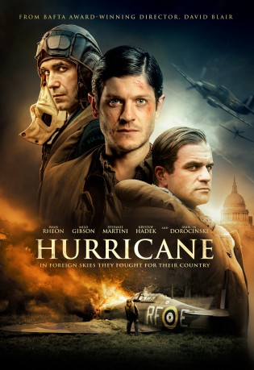

#10741 Hurricane - Luftschlacht um England
Alternativ: Mission of Honor (Englischer Titel)
 
 IMDB-Wertung: 5.9 / 10
IMDB-Wertung: 5.9 / 10  Metascore: 0
Metascore: 0 
Mission of Honor is the story of Hurricane Squadron 303, a group of brave pilots who fought in the skies over England in WW2, not just to keep Great Britain free from the Nazis, but also to keep alive the very idea of their own country, which had existed in its modern form for barely twenty years before it was crushed between the opposing jaws of Germany and Russia. Equipped with the almost-obsolete Hurricane and (with some initial reluctance) given RAF blue uniforms, while they fought, Poland lived.
Jahr: 2018
Dauer: 106 Minuten
FSK:
Land: England Studio: Kaleidoscope Film DistributionTonspuren: DD5.1 - ,
Untertitel: Deutsch, Englisch,
Auflösung: 1080p (1920x800) Größe: 6912 MB
Genre: Action, Drama, Krieg
Regisseur: David Blair
Drehbuch: Robert Ryan, Alastair Galbraith
Soundtrack: Laura Rossi
Darsteller:
 Iwan Rheon als Jan Zumbach 'Donald'
Iwan Rheon als Jan Zumbach 'Donald'- Milo Gibson als John Kent 'Kentowski'
- Stefanie Martini als Phyllis Lambert
 Krystof Hádek als Josef Frantisek
Krystof Hádek als Josef Frantisek- Marcin Dorocinski als Witold Urbanowicz 'Kobra'
- Manuel Klein als Trost
 Raphael Desprez als Favier
Raphael Desprez als Favier- Rosie Gray als Georgina
- Emily Wyatt als Kate
 Robert Portal als Keith Park
Robert Portal als Keith Park- Marc Hughes als Ellis
 Teresa Mahoney als McCormac
Teresa Mahoney als McCormac- James Henri-Thomas als Osbourne
- Matt Malecki als Zygumy Klein 'Ziggy'
 Radoslaw Kaim als Zdzislaw Krasnodebski 'Król'
Radoslaw Kaim als Zdzislaw Krasnodebski 'Król'- Christopher Jaciow als Zdzislaw Henneberg 'Dzidek'
- Adrian Zaremba als Gabriel Horodyszcz
- Filip Plawiak als Miroslaw Feric 'Miro'
 Nicholas Farrell als Hugh Dowding
Nicholas Farrell als Hugh Dowding- Michel Diercks als Weber
 Phil McKee als Higgins
Phil McKee als Higgins Sam Hoare als Roland Kellett
Sam Hoare als Roland Kellett- Michael Keogh als W.O. Jones
- Stuart Packer als Medical Officer
- Drew Cain als Horobin
- Damian Dudkiewicz als Jacek A. Baczewski 'Bruce'
- Darren James King als Dacre
- Andrew Whiffin als Waiter
- Dan Burman als Dacre
- Matthew Houston als Duty Sergeant
- James Yeates als Sgt. Kowalczyk
- David Forde als German Officer 1 (uncredited)
- Tristan Tarabas als German Pilot (uncredited)
- Andrew Sweet als Senior Controller
- Graham Padden als Rawlings
- Jamie Langlands als Met Officer
- William Nash als Naval Controller
- Hugh Alexander als Rollo
- Kit Patrick als Harry Keating
- Michael Houston als Duty Sergeant
- Daniel Cech-Lucas als Jimmy
- Kamil Lipka als Antoni Siudak
- Rafael Ferenc als Ludwik Paszkiewicz
- Slawomir Doliniec als Witold Lokuciewski 'Tolo'
- Maria Estevez-Serrano als Magda Kowalik
- Torin Pocock als Blue Leader
- Tam Williams als Holland
- Daniel Maggott als Landlord
- David Pike als Elderly Soldier
- Joan Kempson als Queenie
Datei: X:\2018(G-M)\Hurricane - Luftschlacht um England (2018, FSK, 1920x800).mkv seit 22.02.2019
Festplatte: HD 2018(G-Z)-2019(A-Z)
 Es gibt insgesamt 138 Filme in der Gruppe '2018(G-M)'
Es gibt insgesamt 138 Filme in der Gruppe '2018(G-M)'